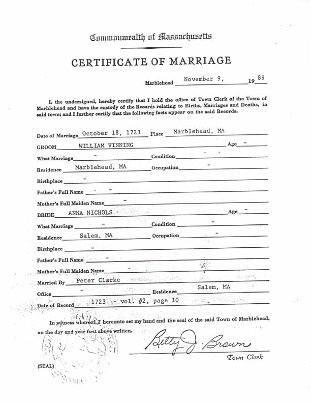

Marriage Data
Certified copy of the record of marriage of William Vining Jr. and Anna Nichols. Note the spelling of William's surname—Vinning.
Research Opportunity
Several hypotheses have been proposed regarding the parentage of the William Vining who married Anna Nichols. The hypothesis proposed on this website (i.e., that he is the son of William Vining and Abigail Eldridge) is based on unpublished research of Ruby Daniels Gordon.